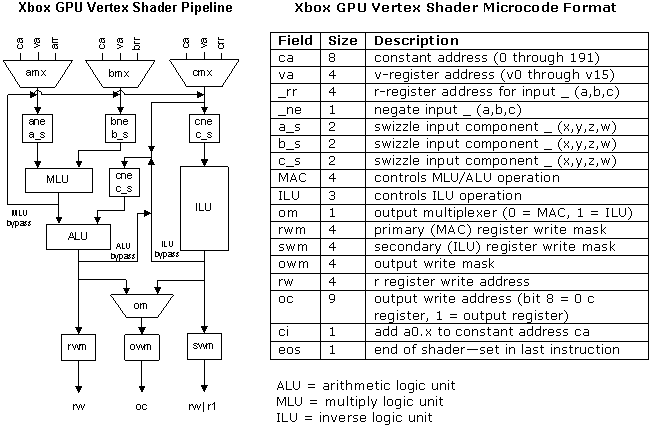

By Jack Palevich
Microsoft® DirectX® 8.0 vertex shaders provide a powerful abstraction for processing vertices. Vertex shaders are simple assembly-level programs for an idealized vertex processor. The shader author writes to the idealized processor, and DirectX takes care of interpreting the shader. On some (PC-based) DirectX systems, the shader might be converted to x86 machine code. On others, it might be converted to microcode for some form of programmable vertex processor that may or may not resemble the idealized processor.
As it happens, the graphics processing unit for the Xbox® video game system from Microsoft (Xbox GPU) contains a microcoded vertex processing unit that closely resembles the idealized vertex processor. The Xbox GPU vertex processing unit executes a superset of the DirectX 8.0 vertex shader instruction set. The full power of this processing unit has been exposed in the Xbox DirectX libraries. This paper gives a detailed description of the Xbox GPU's vertex shader processor, along with tips for programming it.
The Xbox GPU vertex shader processor has the following features:

Inputs:
Operations:
Output:
An example of a paired instruction that writes to multiple outputs:
mul r2,r1,c0 ; MAC operation, writes to r register + mul oPos,r1,c0 ; same operation, writes to an o register + rsq r1.w,v0 ; ILU operation, writes to r1.
This table shows which instructions are executed by which logic units. It also shows which instructions use which inputs.
| Instruction | MLU | ALU | ILU | A | B | C | Comments |
|---|---|---|---|---|---|---|---|
| add | X | X | X | ||||
| arl | X | X | Internal name for mov a0.x | ||||
| dp3 | X | X | X | X | |||
| dp4 | X | X | X | X | |||
| dph | X | X | X | X | |||
| dst | X | X | X | ||||
| exp | X | X | scalar, uses C.x not C.w | ||||
| imv | X | X | Internal name for mov that uses ILU. Xsasm automatically converts mov to imv if required. Because of this conversion, you won't see an imv opcode in assembly or disassembly. | ||||
| lit | X | X | |||||
| log | X | X | scalar, uses C.x not C.w | ||||
| mad | X | X | X | X | X | ||
| max | X | X | X | ||||
| min | X | X | X | ||||
| mov | X | X | |||||
| mul | X | X | X | ||||
| rcc | X | X | scalar, uses C.x not C.w | ||||
| rcp | X | X | scalar, uses C.x not C.w | ||||
| rsq | X | X | scalar, uses C.x not C.w | ||||
| sge | X | X | X | ||||
| slt | X | X | X |
Although the microcode instructions are almost a perfect match with the DirectX vertex shader instructions, there is one subtle difference in the way scalar ILU instructions are implemented. The DirectX vertex shader language specifies that the exp, log, rcc, rcp, and rsq instructions all operate on the "w" component of the input. But the microcode versions of these instructions actually operate on the "x" component of the input. This has subtle implications. For example, you might think you could pair these two instructions:
add oPos, v0, c0 +rsq r1, c0 ;can't be paired, swizzles conflict
But in fact, you can't, because the add instruction requires that the c input's x component hold the value c0.x, while the rsq instruction requires that the c input's x component hold the value c0.w. You could pair these two instructions if the rsq instruction was written "rsq r1, c0.x".
Normal vertex shaders run multi-threaded. There are two copies of the vertex shader pipeline, and each copy can run up to three threads. Therefore, a total of six threads can be active at once. When three threads are run on a pipeline, each thread's instructions are executed once every third cycle.
Read/write vertex shaders and vertex state shaders run single threaded, on a single pipeline.
Even though instructions are executed up to three times more often, single-threaded shaders are inherently slower than multi-threaded shaders, for two reasons:
All inputs to an instruction must be ready before an instruction can start. If the inputs are not ready, the instruction stalls until the inputs are available.
Instructions normally take six cycles to compute their outputs. There are three special "bypass" cases: the ALU, ILU, and MLU bypasses. When you chain together certain sequences of instructions, the result of an instruction is ready for future instructions to use after only three cycles. The bypass path allows swizzling and negation of the result. See the Bypass Details section, below, for more information.
Multi-threading reduces the cost of a stall because each thread tries only to start a new instruction every three cycles. Once started, a multi-threaded instruction still completes in six cycles. This effectively divides the stall penalties by three.
In the following table, "Register Type" is the type of the register that appears as an input to the instruction. A stall occurs if the number of cycles between the instruction that last wrote to the register and the first instruction that reads from the register is less than the number of cycles listed under "Effective Stall."
| Register Type | Effective Stall | Rules | |
|---|---|---|---|
| 1 thread | 3 threads | ||
| a0.x | 0 | 0 | Never stalls. |
| v | 0 | 0 | Never stalls. |
| r | +2 | 0 | ALU, ILU, and MLU bypass. See Bypass Details section below. |
| +5 | +1 | All other cases. | |
| c | +5 | n/a | The memory is divided into two sections based on address bit 2, into blocks of four constants. Writing a section and then reading it causes a stall. The sections are interleaved (odd blocks of four and even blocks of four). |
| 0 | n/a | n/a | Can't read from an output register, except for oPos, which is treated as if it were r12. |
Stalling Notes
xvsw.1.1 rcp r0,v0 ;1 cycle, starts writing to r0 rcp oPos,r0 ;stalls for 5 cycles, waiting for r0 xvsw.1.1 rcp r0,v0 ;1 cycle starts writing to r0 mov r1,v1 ;1 cycle mov r2,v2 ;1 cycle mov r3,v3 ;1 cycle mov r4,v4 ;1 cycle rcp oPos,r0 ;stalls for 1 cycle, waiting for r0
xvsw.1.1 rcp r0,c0 ;1 cycle first iteration, 6 cycles on ;subsequent iterations ; ... body of shader omitted ... rcp c0,r0 ;Last instruction of shader, causes stall of ;the first instruction on the next iteration
xvs.1.1 rcp r0,v0 ;1 cycle rcp r1,r0 ;stalls for 1 cycle, waiting for r0
rcp r0.x,v0 rcp oPos,r0.y ;r0.y is a different component than r0.x
The ALU, ILU, and MLU bypass paths allow some instruction sequences to execute more quickly than normal. However, there are numerous restrictions:
xvss.1.1 ; Vertex state shader
rsq r0.y,v0 ; 1 cycle, no stall
mul r0.x,v1,c0 ; 1 cycle, no stall
mul r0.x,r0,r0 ; 3 cycles, only r0.x is read, MLU bypass works
xvss.1.1 ; Vertex state shader
rsq r0.y,v0 ; 1 cycle, no stall
mul r0.x,v1,c0 ; 1 cycle, no stall
mul r0.y,r0,r0 ; 4 cycles, only r0.y is read, must wait for rsq
; to complete
xvss.1.1 ; Vertex state shader
rsq r0,v0 ; 1 cycle, no stall
mul r0.x,v1,c0 ; 1 cycle, no stall
mul r0.xy,r0,r0 ; 6 cycles. r0.xy are read. Missed bypass chance
; because must wait for rsq to complete. Then,
; must wait for non-bypass mul r0.x to complete.
For normal vertex shaders, the xsasm assembler automatically appends the following instructions onto the end of the vertex shader:
mul oPos.xyz, r12, c-38 ; scale + rcc r1.x, r12.w ; compute 1/w mad oPos.xyz, r12, r1.x, c-37 ; scale by 1/w, add offset
These instructions transform the vertex position from homogenous space into screen space. As you can see, these instructions simply perform a scale, perspective divide, and offset.
Examining these instructions, we see the use of r12 to read back the current value of oPos. You can use this technique in your own code if you want to. It allows you to treat oPos as a thirteenth temporary register. There's no performance penalty to doing this.
There's no requirement that these instructions be the final instructions of the vertex shader. And, in fact, the xsasm optimizer will often move the mul/rcc pair up, to avoid the stall between the rcc and the mad.
Depending upon how your shader computes oPos, you may be able to save some cycles by merging these three instructions with other calculations that you're already doing. If this is the case, you can use the "#pragma screenspace" statement to tell xsasm to not append these three instructions.
#pragma screenspace only affects how the shader microcode is generated. It doesn't tell Direct3D to stop generating values for registers c-37 and c-38. If want to use registers c-37 and c-38 for your own purposes, you must call Direct3D::SetShaderConstantMode with the D3DSCM_NORESERVEDCONSTANTS flag. This flag prevents Direct3D from modifying registers c-37 and c-38.
DirectX calculates the scale and offset values from the arguments to the Direct3DDevice::SetViewport call. If you calculate these values on your own, you must first transform the x, y, and z values into screen space, and then make adjustments.
Screen space means:
The adjustment table:
| D3DMULTISAMPLE_TYPE | Scale | Offset | ||
|---|---|---|---|---|
| X | Y | X | Y | |
| D3DMULTISAMPLE_NONE | 1.0 | 1.0 | 0.53125 | 0.53125 |
| D3DMULTISAMPLE_2_SAMPLES_MULTISAMPLE_LINEAR | 1.0 | 1.0 | 0.03125 | 0.03125 |
| D3DMULTISAMPLE_2_SAMPLES_MULTISAMPLE_QUINCUNX | 1.0 | 1.0 | 0.03125 | 0.03125 |
| D3DMULTISAMPLE_2_SAMPLES_SUPERSAMPLE_HORIZONTAL_LINEAR | 2.0 | 1.0 | 0.53125 | 0.53125 |
| D3DMULTISAMPLE_2_SAMPLES_SUPERSAMPLE_VERTICAL_LINEAR | 1.0 | 2.0 | 0.53125 | 0.53125 |
| D3DMULTISAMPLE_4_SAMPLES_MULTISAMPLE_LINEAR | 1.0 | 1.0 | 0.03125 | 0.03125 |
| D3DMULTISAMPLE_4_SAMPLES_MULTISAMPLE_GAUSSIAN | 1.0 | 1.0 | 0.03125 | 0.03125 |
| D3DMULTISAMPLE_4_SAMPLES_SUPERSAMPLE_LINEAR | 2.0 | 2.0 | 0.53125 | 0.53125 |
| D3DMULTISAMPLE_4_SAMPLES_SUPERSAMPLE_GAUSSIAN | 2.0 | 2.0 | 0.53125 | 0.53125 |
| D3DMULTISAMPLE_9_SAMPLES_MULTISAMPLE_GAUSSIAN | 1.5 | 1.5 | 0.03125 | 0.03125 |
| D3DMULTISAMPLE_9_SAMPLES_SUPERSAMPLE_GAUSSIAN | 3.0 | 3.0 | 0.53125 | 0.53125 |
The offset value of 0.53125 is 0.5 + 1/32. The number 0.5 is the difference between the OpenGL pixel center rasterization rules and the Direct3D rasterization rules. Adding 1/32 implements rounding to the nearest 1/16 of a pixel. The offset of 0.5 is not used when multisampling.
From this table, you can see that the D3DMULTISAMPLE_9_SAMPLES_MULTISAMPLE_GAUSSIAN mode is actually implemented by the hardware as a four-sample multi-sample followed by a 1.5 × 1.5 super-sample.
Say you have four lights, and you want to compute the four normalized difference vectors between the vertex and four lights. You might write the code as follows:
add r4,-r9,c10 ; r9 is the vertex position
; c10 is light 0's position
dp3 r4.w,r4,r4 ; normalize
rsq r4.w,r4.w
mul r4,r4,r4.w
add r5,-r9,c11 ; light 1
dp3 r5.w,r5,r5
rsq r5.w,r5.w
mul r5,r5,r5.w
add r6,-r9,c12 ; light 2
dp3 r6.w,r6,r6
rsq r6.w,r6.w
mul r6,r6,r6.w
add r7,-r9,c13 ; light 3
dp3 r7.w,r7,r7
rsq r7.w,r7.w
mul r7,r7,r7.w
This code is 16 instructions long, but because of stalls, this code takes a total of 4 × 7 = 28 cycles to execute.
The first optimization is to reorder the instructions to eliminate stalls. This is easy to do because there are plenty of temporary registers to hold the intermediate results:
add r4,-r9,c10 add r5,-r9,c11 add r6,-r9,c12 add r7,-r9,c13 dp3 r4.w,r4,r4 dp3 r5.w,r5,r5 dp3 r6.w,r6,r6 dp3 r7.w,r7,r7 rsq r4.w,r4.w rsq r5.w,r5.w rsq r6.w,r6.w rsq r7.w,r7.w mul r4,r4,r4.w mul r5,r5,r5.w mul r6,r6,r6.w mul r7,r7,r7.w
This new code has no stalls in it. Each instruction will run immediately, because all of its input data is already available. This sequence of instructions will take 16 cycles to execute, quite an improvement over the original 28 cycles.
But wait, there's more: The four rsq instructions can be paired with the nearby MLU instructions. To do this, we have to rewrite the code so that the rsq instructions write to the r1 register. Write masks can be used to allow r1 to hold up to four different scalar values.
add r4,-r9,c10 add r5,-r9,c11 add r6,-r9,c12 add r7,-r9,c13 dp3 r4.w,r4,r4 dp3 r5.w,r5,r5 dp3 r6.w,r6,r6 + rsq r1.x,r4.w ; paired with previous instruction dp3 r7.w,r7,r7 + rsq r1.y,r5.w ; paired with previous instruction mul r4,r4,r1.x + rsq r1.x,r6.w ; paired with previous instruction mul r5,r5,r1.y + rsq r1.y,r7.w ; paired with previous instruction mul r6,r6,r1.x mul r7,r7,r1.y
This code has the same effect as the original code but takes only 12 cycles to execute.
Finally, if this code is part of a longer sequence, there are still eight potential slots for instruction pairing. The four slots associated with the add instructions are not very useful, because they are restricted to using the add instruction's last argument as their input. But the other four slots (for the first two dp3 instructions, and the last two mul instructions) are potentially useful. One common use of such free slots is to use the mov instruction to copy data from an input register to an output register. For example, if this shader wanted to pass texture coordinates through to the pixel shader, it could use the following pairing:
dp3 r5.w,r5,r5 + mov oT0,v7 ; paired with previous instruction
All the normal DirectX 8 vertex shader optimization tips still apply. Shorter shaders usually execute in less time than longer shaders. In addition, these special rules apply to the Xbox GPU vertex shader:
The following tips rely on little-known features of normal vertex shaders which are also present in the Xbox GPU hardware: